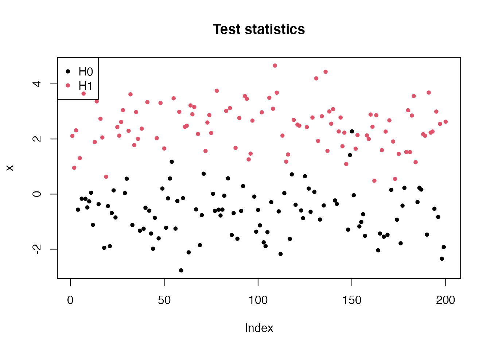
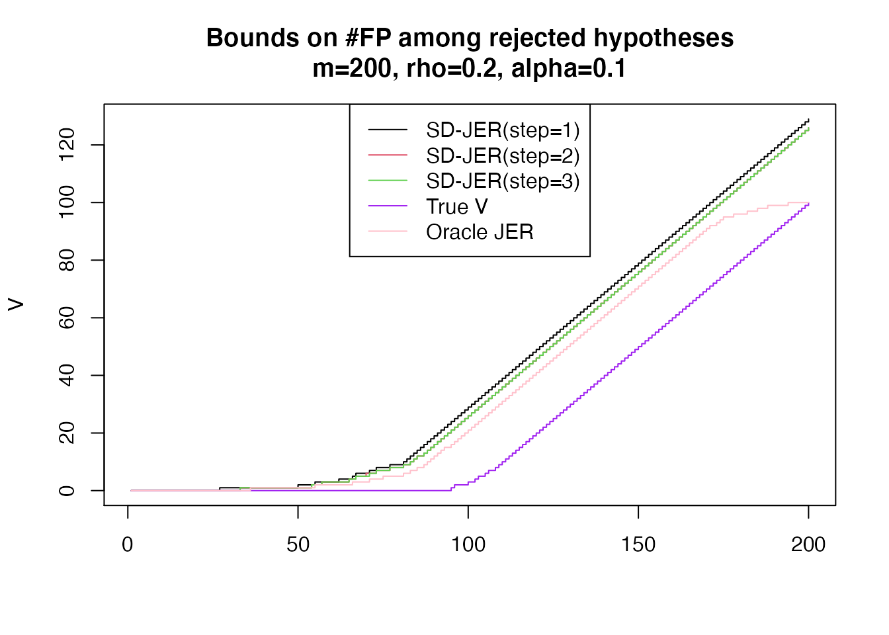

stepDownControl.RmdThis is an internal vignette which illustrates the notion of Joint Family-Wise Error Rate (JER) control, and the possible benefits of step-down control over single step JER control. For simplicity (and historical reasons) we chose here to directly simulate the test statistics (and not the underlying observations). The JER calibration is perfomed by assuming known joint distribution of the test statistics under the null hypothesis.
library("sansSouci")
##
## Attaching package: 'sansSouci'## The following object is masked from 'package:datasets':
##
## volcanoParameters:
m <- 2e2 n <- 123 pi0 <- 0.5 B <- 1e3 rho <- 0.2
We use the function gaussianTestStatistics to generate Gaussian equi-correlated test statistics directly (without passing by observations and associated tests). We then use the (internal) function calibrateJER0 to perform the calibration.
#set.seed(0xBEEF) sim <- gaussianTestStatistics(m, B, pi0 = pi0, SNR = 3, dep = "equi", param = rho) X0 <- sim$X0 x <- sim$x H0 <- which(sim$H == 0) H1 <- which(sim$H == 1)
pch <- 20 plot(x, col = 1 + sim$H, main = "Test statistics", pch=pch) legend("topleft", c("H0", "H1"), pch = pch, col = 1:2)
 ## p-values
alpha <- 0.1 res <- sansSouci:::calibrateJER0(p0, refFamily = "kFWER", alpha=alpha, p.values = p) thr <- res$thr thrMat <- res$stepsDown$thr
o <- order(p) po <- p[o] bounds <- apply(thrMat, 2, function(thr) sansSouci:::curveMaxFP(po, thr))
V <- cumsum(o %in% H0)
p0.Oracle <- p0[-H1, ] p.Oracle <- p[-H1] res.Oracle <- sansSouci:::calibrateJER0(p0.Oracle, refFamily = "kFWER", alpha = alpha, p.values = p.Oracle) thrO <- c(res.Oracle$thr, rep(1, length(H1))) po.Oracle <- p.Oracle[order(p.Oracle)] VbarO <- sansSouci:::curveMaxFP(po, thrO)
nSteps <- ncol(thrMat) cols1 <- seq.int(nSteps) ltys1 <- rep(1, nSteps) ttag <- paste("m=", m, ", rho=", rho, ", alpha=", alpha, sep = "") ttl <- paste("Bounds on #FP among rejected hypotheses", ttag, sep = "\n") xmax <- min(200, m) ymax <- bounds[xmax, 1] matplot(bounds, t = 's', lty = 1, ylab = "V", col = cols1, main = ttl, xlim = c(1, xmax), ylim = c(0, ymax)) cols2 <- c("purple", "pink") ltys2 <- rep(1, 2) lines(V, col = cols2[1], t = "s", lty = ltys2[1]) lines(VbarO, col = cols2[2], t = "s", lty = ltys2[2]) lgd <- c(paste("SD-JER(step=", 1:nSteps, ")", sep = ""), "True V", "Oracle JER") ltys <- c(ltys1, ltys2) cols <- c(cols1, cols2) legend("top", lgd, col = cols, lty = ltys)

## R version 4.0.2 (2020-06-22)
## Platform: x86_64-apple-darwin17.0 (64-bit)
## Running under: macOS Catalina 10.15.6
##
## Matrix products: default
## BLAS: /Library/Frameworks/R.framework/Versions/4.0/Resources/lib/libRblas.dylib
## LAPACK: /Library/Frameworks/R.framework/Versions/4.0/Resources/lib/libRlapack.dylib
##
## locale:
## [1] en_US.UTF-8/en_US.UTF-8/en_US.UTF-8/C/en_US.UTF-8/en_US.UTF-8
##
## attached base packages:
## [1] stats graphics grDevices utils datasets methods base
##
## other attached packages:
## [1] sansSouci_0.8.5
##
## loaded via a namespace (and not attached):
## [1] Rcpp_1.0.5 cpp11_0.2.1 knitr_1.29 magrittr_1.5
## [5] lattice_0.20-41 R6_2.4.1 ragg_0.3.1 rlang_0.4.7
## [9] stringr_1.4.0 tools_4.0.2 grid_4.0.2 xfun_0.17
## [13] htmltools_0.5.0 systemfonts_0.3.1 matrixStats_0.56.0 yaml_2.2.1
## [17] assertthat_0.2.1 rprojroot_1.3-2 digest_0.6.25 pkgdown_1.6.0
## [21] crayon_1.3.4 Matrix_1.2-18 fs_1.5.0 memoise_1.1.0
## [25] evaluate_0.14 rmarkdown_2.3 stringi_1.5.3 compiler_4.0.2
## [29] desc_1.2.0 backports_1.1.9